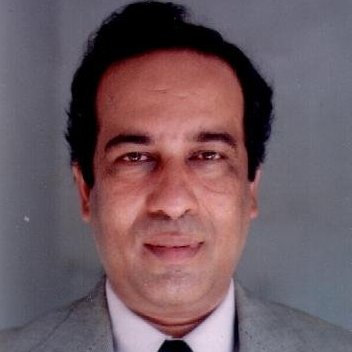

Dr. M. Kaykobad (ডঃ মোহাম্মদ কায়কোবাদ)

Contact
Professor
Department of Computer Science and Engineering
Bangladesh University of Engineering and Technology
Dhaka 1000, Bangladesh
Cell: 880 1552463351
Email: kaykobad AT cse DOT buet DOT ac DOT bd, mkbd1234@yahoo.com
Research Interests
Algorithms and Theory, Computational Complexity and Optimization
Academic Background
Ph.D, 1988
The Flinders University of South Australia, Australia
Minimum connection time and some related complexity problems
M.Engg., Computer Applications Technology, 1980-82
Asian Institute of Technology, Thailand
Regression with minimum absolute deviations
M.S (Hons) in Engg., Automated Management of Merchant Marine, 1973-79
Odessa Marine Engg. Institute
Mathematical models for a shipping company's ships distribution
Selected Publications
Books
13. Munawar Hafiz, Mohammad Sohel Rahman, Mohammad Saifur Rahman, Mohammed Eunus Ali and M Kaykobad, System Analysis and Design: A Practitioner's Approach
12. Mohammad Kaykobad, Medhabi Manusher Golpo, published by Anyoprokash in February, 2005
11. International Mathematics Olympiad: Problems and Solutions, in coauthorship with M Zafar Iqbal, published by Anonya Prokashani, 2003.
10. Neurone Abaro Onuronon, a collection of brain teasers, in coauthorship woth M Zafar Iqbal published by Anonya Prokashani, 2003
9. Neurone Onuronon, a collection of brain teasers, in coauthorship with M Zafar Iqbal published by Anonya Prokashani, 2002
8. Delightful Mathematics Brain twister published in coauthorship with Professor M. Shamsher Ali and Tanbir Ahmed, Voyager Publishers, 2002.
7. Computer Programming Contest and Bangladesh, published by Voyager Publications, 2002.
6. Computer Programming, published as a textbook for students of Bangladesh Open University, 1997
5. Information Technology Management-I, published by the Institute of Cost and Management Accountants, Bangladesh, Dhaka, 1993.
4. Information Technology Management-II, published by the Institute of Cost and Management Accountants, Bangladesh, Dhaka, 1993.
3. Member of the Editorial Board for Computer Basics published by the Bangladesh Open University, 1997.
2. Editor of the textbook Madhyamik Computer Shikhsha approved by the National Curriculum and Text Book Board for classes IX and X, 1996.
1. Coauthor of Training Manual, Computer Studies (for classes IX and X), National Curriculum and Text Book Board, April, 1996.
Journal Papers
56. Mohammad Saifur Rahman, Md. khaledur Rahman, Sanjay Saha, M. Kaykobad, and M. Sohel Rahman, Antigenic: An improved prediction model of protective antigens. Artificial Intelligence in Medicine, Elsevier, 94:28-41, 2019.
55. Mohammad Saifur Rahman, Swakkhar Shatabda, Sanjay Saha, M. Kaykobad, and M. Sohel Rahman, DPP-PseAAC: A DNA-binding protein prediction model using Chou's general PseAAC. Journal of Theoretical Biology, Elsevier, 452(7), :22-34, 2018.
54. Mohammad Saifur Rahman, Md. Yusuf Sarwar Uddin, Tahmid Hasan, M. Sohel Rahman, and M. Kaykobad, Using Adaptive Heartbeat Rate on Long-Lived TCP Connections. IEEE/ACM TRANSACTIONS ON NETWORKING, IEEE, 26(1), :203-216, 2018.
53. Mohammad Saifur Rahman, Md. Khaledur Rahman, M. Kaykobad, and M. Sohel Rahman, isGPT: An optimized model to identify sub-Golgi protein types using SVM and Random Forest based feature selection. Artificial Intelligence in Medicine, Elsevier, 84:90-100, 2018.
52. Johra Muhammad Moosa, Rameen Shakur, M. Kaykobad, and M. Sohel Rahman, Gene selection for cancer classification with the help of bees. BMC Medical Genomics, BioMed Central, 9(S2), 2016.
51. Sumaiya Iqbal, M. Kaykobad, and M. Sohel Rahman, Solving the multi-objective Vehicle Routing Problem with Soft Time Windows with the help of bees. Swarm and Evolutionary Computation, Elsevier, 24(-), :50-64, 2015.
50. M. Sohel Rahman, M. Kaykobad, and J. S. Firoz, New Sufficient Conditions for Hamiltonian Paths. The Scientific World Journal, 2014:ID: 743431, 2014.
49. Md. Mahbubul Hasan, M. Shahjalal, and M. Kaykobad, An in-place heapsort algorithm requiring nlogn+nlog*n?0.546871n comparisons. International Journal of Computer mathematics, 88(16), :3350-3360, 2011.
48. Md. Mahbubul Hasan, N. Shahjalal, and M. Kaykobad, An in-place heapsort algorithm requiring nlogn+nlog*n−0.546871n comparisons. International Journal of Computer mathematics, 88(16), :3350-3360, 2011.
47. Md Kamrul Hasan, M. Kaykobad, and Young-Koo Lee, A comprehensive analysis of degree based condition for Hamiltonian cycles. Theoretical Computer Science, 411(1), :285-287, 2010.
46. Avijit Datta, Moazzem Hossain , and M. Kaykobad, A MODIFIED ALGORITHM FOR RANKING PLAYERS OF A ROUND-ROBIN TOURNAMENT. International Journal of Computer Mathematics, Taylor & Francis, 85(1), :1-7, 2007.
45. Lenin Mehedy, M. Kamrul Hasan, and M. Kaykobad, An improved degree based condition for Hamiltonian cycles. Information Processing Letters, 102(2-3), :108-112, 2007.
44. Asif-ul Haque, Mohammad Saifur Rahman, Mehedi Bakht, and M. Kaykobad, Drawing lines by uniform packing. International journal of Computers and Graphics, Elsevier, 30(2), :207-212, 2006..
43. T. Mesbaul Islam , and M. Kaykobad, Worst-case Analysis of Generalized Heapsort Algorithm. International Journal of Computer Mathematics, Taylor & Francis, 83(1), :59-67, 2006.
42. M. Sohel Rahman, and M. Kaykobad, Complexities of some interesting problems on spanning trees. Information Processing Letters, Elsevier Science, 94(2), :93-97, 2005.
41. M. Sohel Rahman, and M. Kaykobad, On Hamiltonian cycles and Hamiltonian paths. Information Processing Letters, Elsevier Science, 94(1), :37-41, 2005.
40. Md. Mostofa Akbar, Eric G. Manning, M. Sohel Rahman, and M. Kaykobad, Optimal Server Selection for Content Routing. Computers and Their Applications, :259-264, 2005.
39. T. Imam, and M. Kaykobad, Symbolic Substitution Based Canonical Recoding Algorithms. Computers and Mathematics with Applications, Elsevier, 48(10-11), :1541-1548, 2004.
38. Md. Mostofa Akbar, M. Sohel Rahman, M. Kaykobad, G Manning, and GC Shoja, Solving the Multidimensional Multiple-choice Knapsack Problem by constructing convex hulls. International Journal of Computers and Operations Research, 2004.
37. M. Sohel Rahman, and M. Kaykobad, Independence Number and Degree Bounded Spanning Tree. Appl. Math. E-Notes, 4:122-124, 2004.
36. Adib Hassan Manob, Tarique Mesbaul Islam, M Tanvir Parvez , and M. Kaykobad, Search Trees and Stirling Numbers. Computers and Mathematics with Applications, Elsevier, 48:747-754, 2004.
35. MZ Rahman, RA Chowdhury, and M. Kaykobad, Improvements in Double-ended Priority Queues. International Journal of Computer Mathematics, Elsevier, Taylor & Francis, 80(9), :1121-29, 2003.
34. M Abdul Mannan, and M. Kaykobad, Block Huffman Coding. Computers and Mathematics with Applications, Elsevier, 46(10-11), :1581-87, 2003.
33. Mustaq Ahmed, Rezaul Alam Chowdhury , and M. Kaykobad, A New String Matching Algorithm. International Journal of Computer Mathematics, Taylor & Francis, 80(7), :825-834, 2003.
32. M Manzur Murshed, M. Kaykobad, and SM Rahman, A Linguistically Sortable Bengali Coding System and Its Applications in Spell Checking - A Case Study of Multilingual Applications. Interactive Multimedia Systems, Idea Group Publishing Company, 2002.
31. RA Chowdhury, MZ Rahman, and M. Kaykobad, On the bounds of min-max pair heap construction. Computers and Mathematics with Applications, Elsevier, 43:911-916, 2002.
30. F Ahmed, MS Alam, and M. Kaykobad, Data Storage and Recording. Instrumentation and Measurement, John Wiley & Sons, Inc., 2001.
29. Rezaul Alam Chowdhury, Suman Kumar Nath, and M. Kaykobad, A Simplified Complexity Analysis of McDiarmid and Reed s Variant of Bottom-up Heapsort Algorithm. International Journal of Computer Mathematics, Elsevier, 73:293-297, 2000.
28. Rezaul Alam Chowdhury, Suman Kumar Nath, and M. Kaykobad, The Heap Merge Sort. Computer & Mathematics with Applications, Elsevier, 39(7-8), :194-97, 2000.
27. Suman Kumar Nath, Rezaul Alam Chowdhury, and M. Kaykobad, On average edge length of minimum spanning trees. Information Processing Letters, Elsevier, 70(5), :241-243, 1999.
26. Rezaul Alam Chowdhury, and M. Kaykobad, Calculating the Square Root with Arbitrary Order of Convergence. International Journal of Computer Mathematics, Taylor & Francis, 75:297-302, 1999.
25. M. Kaykobad, S.M. Humayun , and Md. Shahid Ullah, An Approach to Bangla Text Analysis. Journal of Electrical Engineering, The Institution of Engineers, Bangladesh, EE26(I & II), :39-42, 1998.
24. M.M. Murshed , and M. Kaykobad, Linguistically Sortable Bengali Texts: a Case Study of Multilingual Applications, in Effective Utilization and Management of Emerging Information Technologies. Information Resources Management Association International Conference, Idea Grouping Publishing, :795-798, 1998.
23. M. Kaykobad, S.M. Humayun , and Md. Shahid Ullah, Comparative Study of Different Compression Algorithms. Journal of Electrical Engineering, The Institution of Engineers, Bangladesh, EE26:27-32, 1998.
22. A.F.R. Rahman , and M. Kaykobad, A Complete Bengali OCR : A Novel Hybrid Approach to Handwritten Bengali Character Recognition. Journal of Computing and Information Technolog, 6(4), :395-413, 1998.
21. Rezaul Alam Chowdhury, Md. Sanaul Hoque , and M. Kaykobad, Mode-finding algorithms revisited. International Journal of Computer Mathematics, Taylor & Francis, 69:253-263, 1998.
20. M. Kaykobad, M.M. Islam, M.M. Murshed , and E. Amyeen, 3 is a more promising algorithmic parameter than 2. Computers and Mathematics with Applications, Elsevier Science, 36(6), :19-24, 1998.
19. M. Kaykobad, Md. Sanaul Hoque, Md. Mostofa Akbar, and Suman Kumar Nath, An Efficient Preprocessor for Solving Systems of Linear Equations. International Journal of Computer Mathematics, Taylor & Francis, 64:309-315, 1997.
18. M.M. Murshed , and M. Kaykobad, Seek distances in two-headed disk systems. Information Processing Letters, Elsevier, 57(4), :205-209, 1996.
17. M. Kaykobad, and A.A.K. Majumdar, An iterative algorithm for the 5-peg tower of Hanoi problem. J. of Bangladesh Academy of Sciences, 20(2), :119-128, 1996.
16. M. Kaykobad, and Md. Shahadatullah Khan, On the performance of simplex algorithm. IPE Research Bulletin, 6:39-57, 1995.
15. M. Kaykobad, S.T. Rahman, R.A. Bakhtiar , and A.A.K. Majumdar, A recursive algorithm for the multi-peg tower of Hanoi problem. International Journal of Computer Mathematics, Taylor & Francis, 57:67-73, 1995.
14. M. Kaykobad, Q.N.U. Ahmed, ATM Shafiqul Khalid, and R.A. Bakhtiar, A new algorithm for ranking players of a round-robin tournament. International Journal of Computers and Operations Research, Elsevier, 22(2), :221-226, 1995.
13. M. Kaykobad, and H.M. Hassan, An algorithm for designing Boolean functions with exclusive-or(EX-OR) & AND logic elements. Journal of Bangladesh Computer Society, 6(1), :49-51, 1993.
12. M. Kaykobad, and H.M. Hassan, Minimization procedure for determination of polarized polynomial form. Journal of Bangladesh Computer Society, 6(1), :27-29, 1993.
11. M. Kaykobad, Q.N.U. Ahmed , and R.A. Bakhtiar, An algorithm for ranking players in a round-robin tournament. J. of Bangladesh Computer Society, 5(1), :20-21, 1991.
10. M.H. Ahsan, M. Kaykobad, and M. Shamsher Ali, Variational Monte Carlo calculations for the binding energy of 31 Si. Physical Review C, 43(1), :156-161, 1991.
9. M. Kaykobad, Towers of Hanoi with 4 pegs. Journal of Bangladesh Academy of Sciences, 13:85-90, 1989.
8. M. Kaykobad, On polytopes with large number of vertices. Ganit, 8(1), :47-52, 1988.
7. M. Kaykobad, On non-negative factorization of matrices. Linear Algebra and Its Applications, 96:27-33, 1987.
6. M. Kaykobad, Positive solutions of positive linear systems. Linear Algebra and Its Applications, 64:133-140, 1985.
5. M. Kaykobad, Positive solutions of a class of linear systems. Linear Algebra and Its Applications, 72:97-105, 1985.
4. V.Z. Ananina , and M. Kaykobad, Generalized model of optimum usage of technical resources of a port. Economics and Management of Marine Transport, 16:56-58, 1980.
3. I.P. Tarasova , and M. Kaykobad, On the method of solving the tasks of optimum planning in conditions of incomplete information. Economics and Management of Marine Transport, 14:25-30, 1978.
2. M. Kaykobad, and FJM Salzborn, The Minimum Connection Time and Majority Spanning Trees. Discrete Applied Mathematics.
1. Tasadduq Imam, and M. Kaykobad, New Symbolic Substitution Based Addition Algorithm. International Journal of Computers and Mathematics with Applications, Elsevier, 50:1303-1310.
Conference Papers
83. Mohammad Saifur Rahman, Md. Yusuf Sarwar Uddin, M. Sohel Rahman, and M. Kaykobad, Using Adaptive Heartbeat rate on Long-lived TCP Connections. In Proceedings of 2016 International Conference on Networking Systems and Security (NSysS 2016), IEEE, Dhaka, pages 16-24, 2016.
82. M. A. Wahid, M. Kaykobad, and Masud Hasan, Kinetisation of view of 3D point set. In Proceedings of International Conference on Computer and Information Technology (ICCIT), Dhaka,Bangladesh, pages 325-330, 2010.
81. N. M. M. K. Chowdhury, Md. Mostofa Akbar, and M. Kaykobad, An Efficient Data Structure using Flash Memory for Mobile Devices. In Proceedings of in the proceedings of WALCOM 2007, Dhaka, pages 76-87, 2007.
80. Md Shahjalal , and M. Kaykobad, A New Data Structure for Heapsort with Improved Number of Comparisons. In Proceedings of Workshop on Algorithms and Computation (WALCOM 2007), Dhaka, pages 88-96, 2007.
79. N.M. Mosharaf Kabir Chowdhury , Md. Mostofa Akbar, and M. Kaykobad, DiskTrie: An Efficient Data Structure Using Flash Memory for Mobile De. In Proceedings of Workshop on Algorithms and Computation (WALCOM 2007), Dhaka, pages 76-87, 2007.
78. M. Sohel Rahman, M. Kaykobad, and Mohammad Saifur Rahman, A New Sufficient Condition for the Existence of Hamiltonian Paths. In Proceedings of 0th International Conference on Computers and Their Applications (CATA), 2005.
77. Asif-ul Haque, Mohammad Saifur Rahman, Mehedi Bakht, and M. Kaykobad, Drawing Lines by Uniform Packing. In Proceedings of International Conference on Computer and Information Technology (ICCIT), pages 186-190, 2004.
76. M. Sohel Rahman, and M. Kaykobad, Set Version: A New Notion and Results (Conference. In Proceedings of Proceedings of the Information Society, 2004, 7th Multi-Conference, Sub-conference: Theoretical Computer Science, 2004.
75. M. Sohel Rahman, and M. Kaykobad, Set Version: A New Notion and Results. In Proceedings of Information Society, 2004, 7th Multi-Conference, Sub-conference: Theoretical Computer Science, Slovenija, 2004.
74. M. Sohel Rahman, M. Kaykobad, and Md. Mostofa Akbar, Independence Number and Hamiltonicity of Graphs (Conference. In Proceedings of 6th International Conference on Computer and Information Technology (ICCIT), pages 150-152, 2003.
73. M. Sohel Rahman, and M. Kaykobad, On Hamiltonian Cycles and Hamiltonian Paths (Conference. In Proceedings of 6th International Conference on Computer and Information Technology (ICCIT), pages 185-187, 2003.
72. SM Niaz Arifin , Lenin Mehedy , and M. Kaykobad, Segmented Display for Bangla Numerals: Simplicity vs. Accuracy. In Proceedings of 6th International Conference on Computer and Information Technology (ICCIT), 2003.
71. M. Sohel Rahman, M. Kaykobad, and Md. Mostofa Akbar, Independence Number and Hamiltonicity of Graphs. In Proceedings of Computer and Information Technology (ICCIT), pages 150-152, 2003.
70. T. Imam , and M. Kaykobad, A New Symbolic Substitution Based Approach for the conversion of binary numbers to CMSD numbers. In Proceedings of 6th International Conference on Computer and Information Technology (ICCIT), pages 170-173, 2003.
69. T. Imam , and M. Kaykobad, New Symbolic Substitution Tables and Algorithms for the design of a fast addition unit. In Proceedings of 6th International Conference on Computer and Information Technology (ICCIT), pages 98-103, 2003.
68. M. Kaykobad, P Prometheus Mitra , and I. King , An Improvement to MST Algorithm for Round-Robin Tournament Ranking. In Proceedings of International Conference on Electrical and Computer Engineering, pages 281-283, 2002.
67. M. Kaykobad, and M. Sohel Rahman, On Spanning Trees with restricted Number of Leaves. In Proceedings of International Conference on Computer and Information Technology, pages 53-54, 2002.
66. M. Kaykobad, Asif-ul Haque , Mohammad Saifur Rahman, and M. Sohel Rahman, On Average Length of Cycle in a Complete Graph. In Proceedings of International Conference on Computer and Information Technology, pages 47-49, 2002.
65. M. Kaykobad, and Ragib Hasan , On Calculation of Optimal Paths in Locally Restorable Bandwidth Constrained Routing in MPLS Networks. In Proceedings of International Conference on Computer and Information Technology, pages 327-331, 2002.
64. M. Kaykobad, and Md Tamjidul Hoque , Coding System for Bangla Spell Checke. In Proceedings of International Conference on Computer and Information Technology, pages 186-190, 2002.
63. M. Kaykobad, and Md Tamjidul Hoque , Use of Phonetic Similarity Property for Bangla Spell Checker. In Proceedings of International Conference on Computer and Information Technology, pages 182-185, 2002.
62. M. Kaykobad, Md Mahbubul Amin Majumder , and ASM Obaidul Haque , Graceful Labelling of Complete Binary Trees. In Proceedings of International Conference on Computer and Information Technology, pages 32-35, 2002.
61. A. H. Tamal, M. S. Rahman, M. Sohel Rahman, and M. Kaykobad, On Average Length of Cycles in Complete Graphs. In Proceedings of 5th International Conference on Computer and Information Technology (ICCIT), pages 47-49, 2002.
60. M. Kaykobad, and RA Chowdhury, Sorting using heap structure. In Proceedings of Proceedings of International Conference on Computer and Information Technology, 2000, pages 26-30, 2001.
59. M. Kaykobad, and SK Nath, A simple linear time algorithm for triangulation of a simple polygon. In Proceedings of Proceedings of International Conference on Computer and Information Technology, 2000, pages 17-20, 2001.
58. M. Kaykobad, PP Mitra, and R. Hasan, A linear time algorithm for single source shortest path problem. In Proceedings of Proceedings of International Conference on Computer and Information Technology, 2000, pages 41-43, 2001.
57. M. Kaykobad, Md. Mostofa Akbar, and S. Hadian, Fault tolerance of distributed multimedia system using quality adaptation. In Proceedings of Proceedings of International Conference on Computer and Information Technology, 2000, pages 55-59, 2001.
56. M. Kaykobad, Shahriar Manzoor, and Munirul Abedin, On optimal keyboard layout. In Proceedings of Proceedings of the International Conference on Computer and Information Technology, 2000, pages 21-25, 2001.
55. M. Kaykobad, SK Nath, and FJM Salzborn, The minimum connection time problem. In Proceedings of International Conference on Electrical and Computer Engineering, pages 302-306, 2001.
54. M. Kaykobad, RA Chowdhury , and I. King , An efficient decoding technique for Huffman codes. In Proceedings of International Conference on Electrical and Computer Engineering, pages 300-301, 2001.
53. M. Kaykobad, M Ahmed , and RA Chowdhury , On partitioning of consecutive integers. In Proceedings of International Conference on Electrical and Computer Engineering, pages 297-299, 2001.
52. M. Kaykobad, R Ahmed , and MA Hossain , Isomorphism of regular graphs. In Proceedings of International Conference on Electrical and Computer Engineering, pages 290-296, 2001.
51. M. Kaykobad, RA Chowdhury , MZ Rahman , and N Mahmood , On the expected number of probes in AVL trees. In Proceedings of International Conference on Electrical and Computer Engineering, pages 281-283, 2001.
50. Sawsan Eskander, Mustaq Ahmed, and M. Kaykobad, Compression using Huffman Coding Techniques. In Proceedings of ICCIT2001, pages 278-282, 2001.
49. Abul Kashem Md. Shirin, and M. Kaykobad, Query Optimization by Decomposition of BCNF/3NF Relations. In Proceedings of ICCIT2001, pages 179-184, 2001.
48. M. Abdul Mannan, and M. Kaykobad, On Optimal Huffman Compression. In Proceedings of ICCIT2001, pages 60-61, 2001.
47. Mohammad Abdul Mannan, Rezaul Alam Chowdhury, and M. Kaykobad, A Storage Efficient Header for Huffman Coding. In Proceedings of ICCIT2001, pages 57-59, 2001.
46. Mushfiqur Rouf, and M. Kaykobad, Searching Objects on Lines and Rays. In Proceedings of ICCIT2001, pages 13-15, 2001.
45. Pradipta Prometheus Mitra, Ragib Hasan, and M. Kaykobad, On Linear Time Algorithm for SSP Problem. In Proceedings of ICCIT2001, pages 9-12, 2001.
44. Adib Hassan Manob, and M. Kaykobad, Stirling Numbers and Two Inversion Formulas. In Proceedings of ICCIT2001, pages 6-8, 2001.
43. M. Kaykobad, M.M. Murshed, Syed M. Rahman, and S.M. Rahman, A linguistically Sortable Coding System and Its Applications in Spell Checking: A Case Study of Multilingual Applications. In Proceedings of Proceedings of the 24th AMSE Annual Conference, Best Western Hotel, Leesburg, Virginia, USA, 1999.
42. M. Kaykobad, Md. Mostofa Akbar, and M. Mamunul Islam, Quicksort Using Higher Degree Comparators. In Proceedings of IASTED Conference on Simulation and Modeling, 1999, Philadelphia, 1999.
41. A.K.M. Ashikur Rahman, and M. Kaykobad, A new map method for minimizing Boolean Expressions. In Proceedings of International Conference on Computer and Information Technology, Dhaka, Bangladesh, 1999.
40. M. Kaykobad, and A.K.M. Ashikur Rahman, A new map method for minimizing Boolean Expression. In Proceedings of Proceedings of International Conference on Computer and Information Technology, pages 193-196, 1999.
39. M. Kaykobad, Rezaul Alam Chowdhury, and Mustaq Ahmed, A new exact string matching algorithm. In Proceedings of Proceedings of International Conference on Computer and Information Technology, pages 187-192, 1999.
38. M. Kaykobad, Rezaul Alam Chowdhury, Tarique Mesbaul Islam, and Suman Kumar Nath, On parameters of search trees. In Proceedings of Proceedings of International Conference on Computer and Information Technology, pages 50-53, 1999.
37. M. Kaykobad, Suman Kumar Nath, Rezaul Alam Chowdhury, and Mustaq Ahmed, Algorithms for solving systems of linear equations. In Proceedings of Proceedings of International Conference on Computer and Information Technology, pages 33-36, 1999.
36. M. Kaykobad, Md. Mostofa Akbar, and M. Mamunul Islam, Quick sort using comparators with higher degree. In Proceedings of Proceedings of International Conference on Computer and Information Technology, pages 28-32, 1999.
35. M. Kaykobad, Tarique Mesbaul Islam, and Rezaul Alam Chowdhury, On Optimal d-Huffman Tree. In Proceedings of Proceedings of International Conference on Computer and Information Technology, pages 23-27, 1999.
34. M. Kaykobad, Rezaul Alam Chowdhury, and Sumon Kumar Nath, On some issues related To LP Problem. In Proceedings of Proceedings of International Conference on Computer and Information Technology, pages 15-18, 1999.
33. M. Kaykobad, Suman Kumar Nath, and Rezaul Alam Chowdhury, Min-Max Fine Heaps. In Proceedings of Proceedings of International Conference on Computer and Information Technology, pages 6-10, 1999.
32. M. Kaykobad, M. Ziaur Rahman, and Rezaul Alam Chowdhury, Improvements in double ended priority queues. In Proceedings of Proceedings of International Conference on Computer and Information Technology, pages 1-5, 1999.
31. M. Kaykobad, Md. Mostofa Akbar, A. K. M. Azad, and F. J. M. Salzborn, Complexity of Max Cut on Special Graphs. In Proceedings of International Conference on Computer and Information Technology, pages 28-32, 1998.
30. M. Kaykobad, and A.K.M. Azad, Differential Sort(D-Sort):A Subtraction-Based Sorting Algorithm. In Proceedings of An International Conference on Computer and Information Technology, pages 234-238, 1998.
29. M. Kaykobad, and Tarique Mesbaul Islam, Worst-Case Analysis of Generalized Heapsort Algorithm Revisited. In Proceedings of An International Conference on Computer and Information Technology, pages 224-228, 1998.
28. M. Kaykobad, and A.K.M. Ashikur Rahman, Minimizing Area Cost of On-Chip Cache Memories. In Proceedings of An International Conference on Computer and Information Technology, pages 63-68, 1998.
27. M. Kaykobad, Suman Kumar Nath, and Rezaul Alam Chowdhury, On Some Classes of Spanning Trees. In Proceedings of An International Conference on Computer and Information Technology, pages 42-44, 1998.
26. M. Kaykobad, Suman Kumar Nath, M. Mamunul Islam, F.J.M. Salzborn, and M.M. Murshed, Majority Spanning Trees and Their Applications. In Proceedings of An International Conference on Computer and Information Technology, pages 33-36, 1998.
25. M. Kaykobad, Md. Mostofa Akbar, A.K.M. Azad , and F.J.M. Salzborn, Complexity of Max-Cut on Special Graphs. In Proceedings of An International Conference on Computer and Information Technology, pages 28-32, 1998.
24. M. Kaykobad, A.F.R. Rahman, and Md. Abdus Sattar, A novel hybrid approach to handwritten Bangla character recognition. In Proceedings of Proc. International Conference on Computational Linguistics, speech and Document Processing,, Calcutta, India, pages A5-A10, 1998.
23. A.K.M. Ashikur Rahman, and M. Kaykobad, Seek time in replicated two-headed disk systems. In Proceedings of National Conference on Computer and Information Systems, Dhaka, Bangladesh., pages 15-20, 1997.
22. M. Z. Rahman, S. Ghosh, Md. Mostofa Akbar, M. Kaykobad, and M. M. Murshed, Divide and Conquer Approach to Solving System of Linear Equations. In Proceedings of First National Conference on Computer and Information Systems,, Dhaka, Bangladesh, pages 7-12, 1997.
21. M. Kaykobad, Nazmul Haque, and Syed M. Rahman, Retrieval Effectiveness of Thumbnail Transformation. In Proceedings of National Conference on Computer and Information Systems, pages 167-172, 1997.
20. M. Kaykobad, and A.K.M. Azad, A Variation of MergeSort Algorithm Requiring Fewer Comparisons. In Proceedings of National Conference on Computer and Information Systems, pages 52-57, 1997.
19. M. Kaykobad, Rezaul Alam Chowdhury, and Md. Abdul Hakim, An Iterative Method for Calculating the Square Root with Arbitrary Order of Convergence. In Proceedings of National Conference on Computer and Information Systems, pages 48-51, 1997.
18. M. Kaykobad, Rezaul Alam Chowdhury, and Tarique Mesbaul Islam, On Merging Two Heaps. In Proceedings of National Conference on Computer and Information Systems, pages 44-47, 1997.
17. M. Kaykobad, Rezaul Alam Chowdhury, and Md. Ziaur Rahman, Improvement in Mode-Finding Algorithms. In Proceedings of National Conference on Computer and Information Systems, pages 32-37, 1997.
16. M. Kaykobad, and Suman Kumar Nath, An Algorithm for Ranking Objects with Weight. In Proceedings of National Conference on Computer and Information Systems, pages 21-26, 1997.
15. M. Kaykobad, and A.K.M. Ashikur Rahman, Seek Time in Replicated Two Headed Disk Systems. In Proceedings of National Conference on Computer and Information Systems, pages 15-20,1-6, 1997.
14. M. Kaykobad, M. Ziaur Rahman, Md. Mostofa Akbar, and M. Manzur Murshed, Divide and Conquer Approach in Solving System of Linear Equations. In Proceedings of National Conference on Computer and Information Systems, pages 7-12, 1997.
13. M. Kaykobad, and S. Masum Emran, A New Approach to Solving the Closest-Pair Problem. In Proceedings of National Conference on Computer and Information Systems, pages 1-6, 1997.
12. M. Kaykobad, and ATM Shafiqul Khalid, An Efficient Line Algorithm. In Proceedings of 39th Midwest Symposium on Circuits and Systems, Iowa State University, Arnes, Iowa, USA, pages 1280-1282, 1996.
11. M. Kaykobad, A New Algorithm for Systems of Linear Equations. In Proceedings of Tenth Mathematics Conference, Bangladesh Mathematical Society, 1995.
10. M. Kaykobad, Geometry in Solving Systems of Linear Equations. In Proceedings of first International Congress on Muslim Youths and Scholars Innovations and Creative Works, Tehran, Iran, 1995.
9. M. Kaykobad, Mahboob Hasan Chowdhury , and S.M.M.R. Chowdhury, On Optimization of Arithmetic Computation. In Proceedings of 15th Annual Bangladesh Science Conference, pages 92-96, 1990.
8. M. Kaykobad, S.M. Humayun, and Syed Mahbubur Rahman, Standard Static Huffman Code for Bangla Alphabet. In Proceedings of 15th Annual Bangladesh Science Conference, pages 85-88, 1990.
7. M. Kaykobad, Ram Krishna Talukder , and M. Musa, A VS FORTRAN Code for Simplex Algorithm Using Column Generation Technique. In Proceedings of 14th Annual Bangladesh Science Conference, pages 59-61, 1989.
6. M. Kaykobad, and M. Musa, On the Average performance of the Heapsort. In Proceedings of 14th Annual Bangladesh Science Conference, pages 14, 1989.
5. M. Kaykobad, and M.A. Shaheed, Some Techniques for Representing and Operating on Sparse Matrices. In Proceedings of 14th Annual Bangladesh Science Conference, pages 14, 1989.
4. M. Kaykobad, and M. Farhad Hossain, On Nonnegative Factorization of a Class of Matrices. In Proceedings of 13th Annual Bangladesh Science Conference, pages 19, 1988.
3. M. Kaykobad, Ram Krishna Talukder, and M. Musa, An MIP Model for Transportation Problems Using Subgraph Selection. In Proceedings of 13th Annual Bangladesh Science Conference, pages 19-20, 1988.
2. M. Kaykobad, Ziaul Hasan Masum, and M. Musa, On Graceful Labelling of Trees. In Proceedings of 13th Annual Bangladesh Science Conference, pages 21, 1988.
1. M. Kaykobad, An Algorithm for Towers of Hanoi with p>=3 Pegs. In Proceedings of 14th Annual Bangladesh Science Conference.